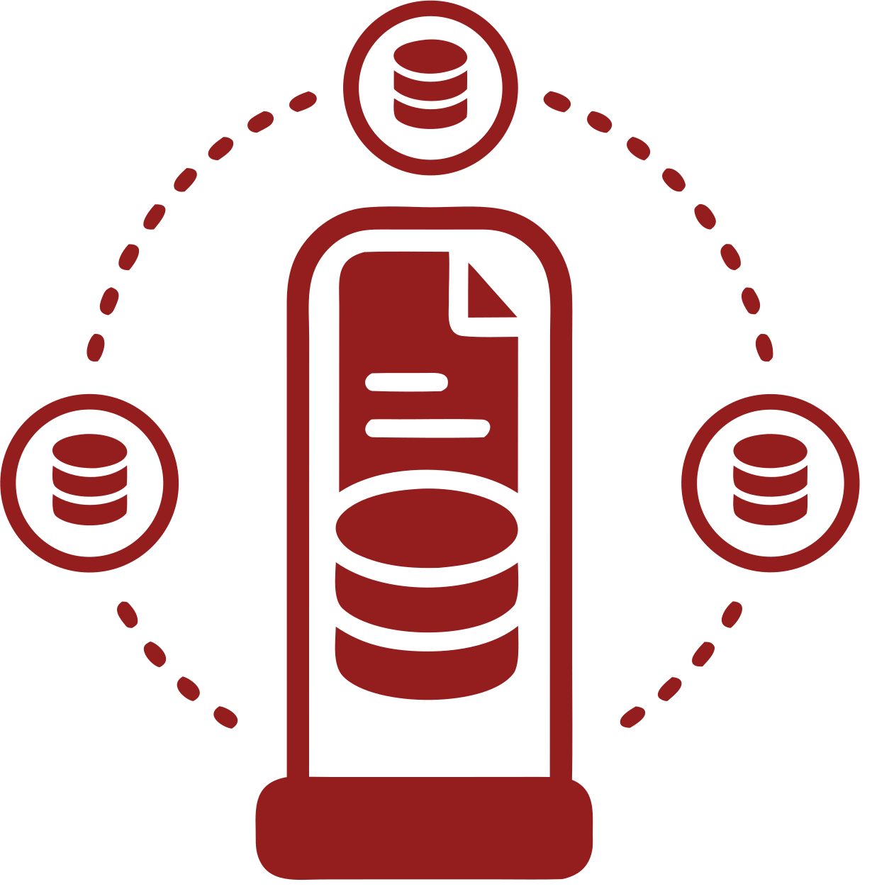

Application
Send a JSON request over the versioned HTTP API.

VialKeeperA technical introduction
VialKeeper is an Elixir/OTP runtime for one or many revisioned JSON document databases. It connects them with replication and federation, and can expand read capacity with shadow copies.
Databases are portable files: you can copy one to another location without a special migration procedure. Backups are just as straightforward.
01 / The mental model
Your application speaks to a stable VialKeeper boundary. The storage engine stays behind it, so clients do not need to know which backend holds the bytes.
Send a JSON request over the versioned HTTP API.
Checks the request, assigns an ID, and coordinates supervised work.
A registered path on disk holds one portable database and its durable state.
Use documents, changes, indexes, views, search, or replication as needed.
02 / The reason for the system
VialKeeper is built for more than one database. Each database can accept writes. Replication moves changes between peers, while federation lets one read span several database UUIDs.
This is the multi-master shape: databases are peers, not a single primary plus passive copies.
Federation is a query path across selected databases. It is not a live stream and it does not make a multi-database transaction.
03 / More reads without more writers
A shadow is a read-only materialization of one source database. When enabled and ready, read traffic can use one or more shadows while the source remains the authority for writes.
Shadows can take pressure off the source for document, revision, and attachment reads. They do not become new write authorities.
Ready shadows serve eventual reads. A caller can request the primary, and a lagging or missing result falls back to the source.
04 / A small example
Document IDs live in the request body. Responses use an envelope with a request ID and either data or an error. Unknown JSON fields are rejected.
A conditional write can say which revision it expects. This makes a lost update visible instead of silently overwriting it.
POST /v1/databases/{uuid}/documents/put { "id": "note-1", "if_revision": "sha256:…", "body": { "done": true } }
The revision is part of the result. A caller can keep it and use it for the next compare-and-set update.
200 { "request_id": "req_…", "data": { "revision": "sha256:…" } }
05 / The consistency layer
Multi-master replication needs a way to carry changes and detect concurrent edits without losing them. Revisions are that consistency layer. Branch preservation and temporary winner selection are automatic. Conflict resolution is explicit. Normal local writes use CAS and report a conflict instead of silently creating one; independent replicas or non-CAS writes can produce the branches shown in the image.
Conflicts are information. VialKeeper does not silently choose a winner just because two writes arrived close together.
06 / The surface area
Core includes the data model and VialKeeper's deliberate read, coordination, and scaling mechanisms. Full-text search is a rebuildable sidecar; the console is administration.
| Capability | What it means | Available |
|---|---|---|
| Documents | Put, get, delete, and resolve revisioned JSON documents. | Core |
| Changes feed | Poll or stream public changes from a sequence using NDJSON. | Core |
| Structured query | Selectors, sort, projection, bookmarks, and structured indexes. | Core |
| Full-text search | Named rebuildable Tantivy indexes composed with the structured query result path. | Sidecar |
| Live subscriptions | Bounded snapshot and update streams for structured queries. | Core |
| Declarative views | Durable local map/reduce read models without user-supplied code. | Core |
| Multi-master replication | One-shot or continuous push/pull between registered databases that can each accept writes. | Core |
| Federated reads | Run a bounded structured query across selected database UUIDs. The query is not a live stream. | Core |
| Materialized views | Maintain a derived read-only database from several source databases. | Core |
| Shadow reads | Serve read traffic from generation-fenced, read-only materializations of a source database. | Core |
| Attachments | Upload bytes and reference content-addressed representations from documents. | Core |
| Administration console | Required shipped operator UI over the same application services; configurable per host. | Administration |
07 / Limits are part of the design
A good fit depends on the shape of the problem.
These are intentional boundaries, not hidden footnotes.
Clients submit structured requests. They do not send backend-specific query commands or raw full-text syntax.
VialKeeper is not CouchDB or PouchDB wire compatible. Its API and document rules are its own.
There are no multi-database transactions and no live federation streams. Federation only covers a limited set of databases at a time.
Views use declarative map/reduce. Custom JavaScript or Elixir map functions are not part of the model.
A bundle copied under the root is not adopted automatically. Registration is an explicit safety step.
A copied bundle keeps the same database UUID. Treat copy and identity as separate decisions.
08 / Storage engine
VialKeeper uses a pluggable storage engine. By default, it is backed by battle-tested SQLite. The rest of the system talks to VialKeeper’s document and storage interfaces, so the backend can change without changing the client model.
SQLite is an embedded database stored with the VialKeeper bundle. It gives the default installation a durable, local engine without a separate database service.
The API, revision rules, and document model do not need to expose backend commands. This keeps client code stable and leaves room for another storage backend when a workload needs one.
09 / A reasonable place to start
VialKeeper is a fit when you want portable document bundles, explicit revision history, structured APIs, and an OTP service reached through HTTP.